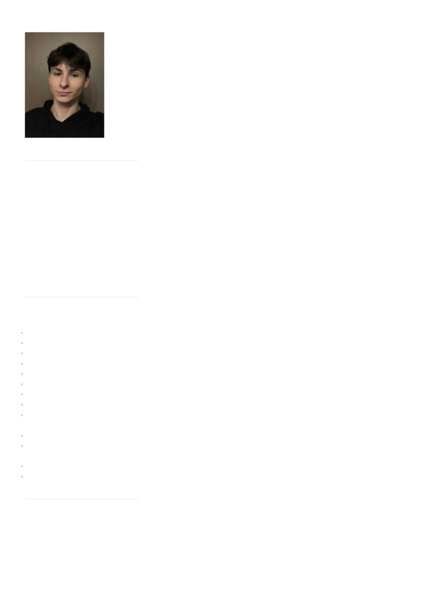

Adrian Nieściur
Doświadczenie zawodowe
09.2021 - obecnie [6 mies.]
Web Publisher / Cheil Germany GmbH / Warszawa
Krótki opis stanowiska:
Publishing i Front End
Wykształcenie
09.2020 - 06.2021 [10 mies.]
Kontakt
Zespół Szkół Nr 26 w Warszawie
E-mail:
Specjalizacja: Technik Informatyk
adrianfactuall@gmail.com
Poziom wykształcenia: średnie
Telefon:
09.2019 - 09.2020 [1 rok 1 mies.]
798 659 620
Zespół Szkół Technicznych w Janowie Lubelskim
Data urodzenia:
Specjalizacja: Technik Informatyk
24.04.2003
Poziom wykształcenia: średnie
Miejscowość:
Warszawa
Aktywność dodatkowa
01.2018 - 09.2020 [2 lata 9 mies.]
Wsparcie informatyczne w ASiM Pośrednictwo Ubezpieczeniowe
Umiejętności
/ Janów Lubelski
Programowanie obiektowe
Dodatkowe informacje:
C#
Montaż, eksploatacja i serwisowanie sprzętu elektronicznego
Java
Produkcja muzyczna
Montaż filmowy
Zainteresowania
Grafika komputerowa
Edycja zdjęć
Produkcja muzyczna, gra na gitarze, programowanie, tatuaże, obróbka zdjęć i
Znajomość Microsoft Office
wideo, jazda na deskorolce, integracja i poznawanie nowych ludzi
Montaż i eksploatacja
komputerów
Linki
Elektrotechnika
Obsługa systemów z rodziny
Portfolio w formie publicznego repozytorium zawierające prace
Linux
developerskie oraz oficjalne tłumaczenie oprogramowania
Obsługa serwera Linux
Web development
Języki
angielski: poziom zaawansowany
polski: poziom ojczysty